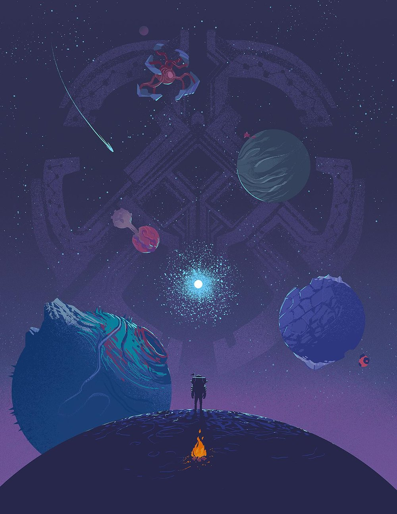

Exploração

Sem armas, sem níveis
Em Outer Wilds você não ganha poderes novos nem melhora equipamentos. O que muda ao longo do jogo é o seu conhecimento.
O jogo não tem marcadores no horizonte nem uma ordem de missões. Quem decide o que fazer é você.
Seus equipamentos
- Nave: pequena e simples, exige pilotagem manual.
- Traje espacial: protege você e permite flutuar fora da nave.
- Luneta de sinais: ferramenta para observar e registrar o que encontrar.
- Diário da nave: guarda automaticamente as suas anotações.
Dicas para começar
- Não tenha pressa: errar faz parte do aprendizado.
- Siga o que despertar sua curiosidade.
- Treine a pilotagem com calma perto de casa.